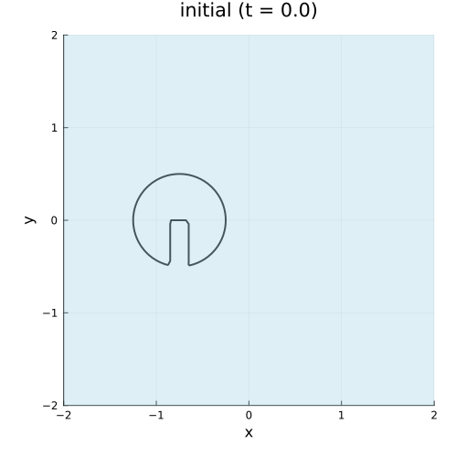

Zalesak's Rotating Disk
The classic benchmark problem for level set methods: a slotted disk under rigid body rotation.
Problem Setup
This standard test case evaluates the ability of level set methods to preserve sharp features during advection.
- Domain: $[-1.5, 1.5]^2$
- Grid: 100 × 100 cells
- Initial shape: A disk of radius 0.5 centered at (-0.75, 0) with a rectangular slot
- Velocity: Rigid body rotation $\mathbf{u}(x,y) = \omega(-y, x)$ with $\omega = 2\pi$
Zalesak Disk Geometry
The Zalesak disk is defined as a circle with a rectangular slot carved out:
function zalesak_disk(x)
center = (-0.75, 0.0)
radius = 0.5
# Circle SDF: positive inside, negative outside
d_circle = radius - sqrt((x[1] - center[1])^2 + (x[2] - center[2])^2)
# Rectangular slot: centered on circle, extends upward
h = 1.0 # slot height
w = 0.2 # slot width
xmin = center[1] - w/2
xmax = center[1] + w/2
ymin = center[2]
ymax = center[2] + h
# Slot SDF: positive inside slot, negative outside
dx = min(x[1] - xmin, xmax - x[1])
dy = min(x[2] - ymin, ymax - x[2])
d_slot = min(dx, dy)
# Zalesak disk = circle minus slot (positive inside convention)
return min(d_circle, -d_slot)
endCode
using EvolvingDomains
using Gridap, GridapEmbedded
using LevelSetMethods
# Domain setup
domain = (-1.5, 1.5, -1.5, 1.5)
partition = (100, 100)
model = CartesianDiscreteModel(domain, partition)
# Rigid body rotation about origin
ω = 2π # One revolution in T=1
velocity(x) = (-ω * x[2], ω * x[1])
# Create evolver
evolver = LevelSetMethodsEvolver(;
bg_model = model,
initial_ls = zalesak_disk,
velocity = velocity,
spatial_scheme = :WENO5,
integrator = :RK3,
bc = :Neumann
)
eg = EvolvingDiscreteGeometry(evolver, model)
# Store initial state for error comparison
ϕ_initial = copy(EvolvingDomains.current_levelset(eg))
# Time stepping: one full revolution
Δt = 0.005
substeps = 4
nsteps = 50
reinit_freq = 5
for step in 1:nsteps
for _ in 1:substeps
EvolvingDomains.advance!(eg, Δt)
end
if step % reinit_freq == 0
EvolvingDomains.reinitialize!(eg)
end
end
# Error analysis
ϕ_final = EvolvingDomains.current_levelset(eg)
error_L2 = sqrt(sum((ϕ_final .- ϕ_initial).^2) / length(ϕ_initial))
error_Linf = maximum(abs.(ϕ_final .- ϕ_initial))
println("L² error: ", round(error_L2, sigdigits=4))
println("L∞ error: ", round(error_Linf, sigdigits=4))Error Metrics
After one complete revolution, we compute:
- L² error: RMS difference between initial and final level set values
- L∞ error: Maximum point-wise difference
- Area change: Relative change in the domain area
A good level set method should minimize these errors while preserving the sharp slot features.
Results

The WENO5 scheme with periodic reinitialization does a good job preserving the slotted disk shape throughout the rotation.